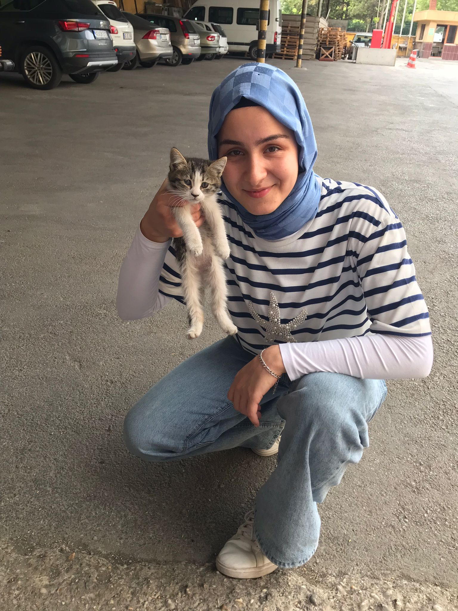

CV
Benim Fotoğrafım

İsim: Saliha Mini
E-Posta Adresi: salihamini38@gmail.com
Telefon Numarası: 0541 5** ** **
Doğum Tarihi: 16.11.2007
Adres:Konya
Konum Bağlantım
Eğitim Hayatım
- Adil Karaağaç Mesleki Ve Teknik Anadolu Lisesi - Kimya Teknolojisi (2021-2025)
- KTO Karatay Üniversitesi - Bilgisayar Programcılığı (2025-Devam)
İş Deneyimim
- Laboratuvar Stajyeri, ON-EL Un fabrikası (2024-2 ay)
- Numune hazırlama
- Buğday Analizi
- Numuneleri analiz etme ve raporlama
- FFN-FN değerleri ölçme
- Laboratuvar cihazlarının hazırlanması
Yeteneklerim
- Laboratuvar cihazları kullanma ve laboratuvar teknikleri
- MS Office (PowerPoint,Word)
- Ekip çalışması
- Veri toplama ve raporlama
- Analiz ve deney hazırlığı
- İnsanlarla kolay iletişim kurma ve hemen anlaşma
- Hızlı ögrenme ve uyum sağlama
- Problem çözme ve analitik düşünme
- On parmak klavye yazma
Bildiğim Diller
- Türkçe (Ana dil)
- İngilizce (B1 Seviye)
İlgi Alanlarım
- Motorlar
- Kitap Okumak
- Şiir yazmak
- Bilimsel araştırmalar yapmak
- Hayvanlar
- Programlama Öğrenmek
- Spor yapmak
- Şınav
- Mekik
- Plank
- Barfiks